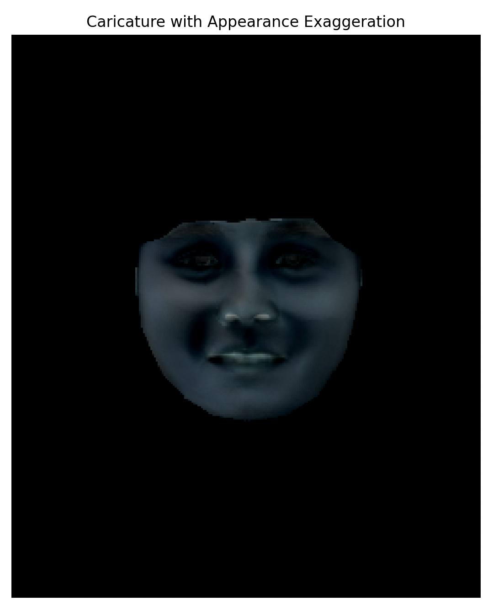

<!DOCTYPE html>
<html lang="en">
<head>
    <meta charset="UTF-8">
    <meta name="viewport" content="width=device-width, initial-scale=1.0">
    <title>CS180 Portfolio - Project 3</title>
    <style>
        body {
            font-family: Arial, sans-serif;
            line-height: 1.6;
            margin: 0;
            padding: 20px;
            max-width: 800px;
            margin: 0 auto;
        }
        h1, h2 {
            color: #333;
        }
        img {
            max-width: 100%;
            height: auto;
            margin-bottom: 10px;
        }
        .image-container {
            margin-bottom: 30px;
        }
    </style>
</head>
<body>
    <h1>Face Morphing</h1>
  
    <h2>Overview</h2>

    <p>In this project, I tried to create a morph between two images -- my portrait and Bill's mugshot.</p>
    <p>I also computed the mean face of a population dataset, and generate caricatures by extrapolating from the population mean.</p>
    <p>I achieved this through image warping, cross-dissolving colors, and manipulating facial geometries using keypoints and Delauney triangulation.</p>

    <h2>Part 1: Defining Correspondences</h2>
    <p>First, I resized my portrait's dimensions to Bill's mugshot to ensure correspondence.</p>
    <p>Then, I manually selected 55 keypoints on my portrait and Bill's to mark corresponding facial features, 4 of them being the corners. I did this using the labeling tool created by last year's student.</p>
    <p>I then computed a Delaunay triangulation based on the average positions of these keypoints to map the two faces.</p>
    <div class="image-container">
        <h3>Triangulated Sam and Bill</h3>
        
    </div>

    <h2>Part 2: Computing The Mid-Way Face</h2>
    <h3>To create the mid-way image between the two faces, I:</h3>
    <p>1. Calculated the average of the corresponding keypoints from both images to get the intermediate shape, using the formula below:</p>
    <div class="image-container">
        
    </div>
    <p>2. Created empty images im1_warped and im2_warped to store the warped versions of each input image.</p>
    <p>3. Iterated over each triangle in the Delaunay triangulation computed on the average shape. For each triangle, I:</p>
    <p>3a. Extracted the corresponding vertices from both images' keypoints and the average shape.</p>
    <p>3b. Computed the affine transformation matrices to map the source triangles from each image to the destination triangle in the average shape.</p>
    <p>3c. Used the warp_triangle function to perform the affine warping for each triangle, applying inverse warping and masking to ensure accurate pixel mapping.</p>
    <p>4. Averaged the pixel values of the two warped images to blend them together, using the formula below:</p>
    <div class="image-container">
        
    </div>
    
    <h2>Part 3: The Morph Sequence</h2>
    <p>I created a morph sequence, defining 45 frames to show the transition between two faces. I calculated the warp and dissolve fractions (ranged from 0 to 1) for each frame, blending them gradually.</p>
    <p>Plugging these fractions into the morph function, I generated intermediate images and saved them to the output directory. Finally, I compiled these images into an animated GIF, with each frame being displayed for 30 ms.</p>
    <div class="image-container">
        <h3>Morph Sequence GIF</h3>
        <video autoplay loop muted playsinline>
        
    </div>

    <h2>Part 4: The "Mean Face" Of A Population</h2>
    <p>In this part, I computed the mean face of a population using the Danes dataset, which includes facial images annotated with 46 keypoints each.</p> 
    <p>First, I collected all facial images (*a.jpg) and their corresponding keypoint files (*a.pts) from the dataset directories. Then, I used a numerical sort to pair images and keypoint files correctly.</p>
    <p>After I loaded each image and keypoints (verifying that there were 46), I calculated the mean shape by averaging the keypoints across all images. This mean shape is the mean facial geometry of the population.</p>
    <p>I then used Delaunay triangulation on the mean shape to warp each face to the average geometry with affine transformations, then averaged the pixel values of these warped images to create the population's mean face.</p>
    <p>The output I got (shown below) is the average facial structure and appearance of the population.</p>
    <div class="image-container">
        <h3>Average Face</h3>
        
    </div>
    <p>To visualize how my own face compares to this average, I created a new image of myself called sam2.png</p>
    <p>However, since I selected 55 points in the previous step, I reselected 46 points on my portrait to match the .pts file that was attached to each image in the dataset.</p>
    <p>To make sure I had the order correct, I implemented a script that ovelays the points on the face, specifying the order of selection based on the line order of the .pts file.</p>
    <p>This is what the result of that script looks like:</p>
    <div class="image-container">
        <h3>Points On Face</h3>
        
    </div>
    <p>And with this ordering, I clicked on my face in approximately the same spots in the same order.</p>
    <p>This is what the result of that script looks like:</p>
    <div class="image-container">
        <h3>Points On Face</h3>
        
    </div>
    <p>Using the same triangulation technique, I warped my face into the average geometry, and the average face into the geometry of my face.</p>
    <div class="image-container">
        <h3>My face morphed into the average geometry</h3>
        
    </div>
    <div class="image-container">
        <h3>Average face morphed into my facial geometry</h3>
        
    </div>
    

    <h2>Part 5</h2>
    <p>I created caricatures of my face by extrapolating from the population mean computed earlier. Specifically, I used the average expression face derived from the dataset to exaggerate features of my own face.</p>
    <p>By setting the exaggeration factor α = 1.5, I amplified the differences between my facial features and the average expression face and created a caricature. This was done by setting the alpha value outside [0, 1].</p>
    <p>I calculated the target keypoints using the formula:</p>
    <div class="image-container">
        
    </div>

    <div class="image-container">
        <h3>α = -0.5</h3>
        
    </div>
    <div class="image-container">
        <h3>α = 0.5</h3>
        
    </div>
    <div class="image-container">
        <h3>α = 0.5</h3>
        
    </div>
    <div class="image-container">
        <h3>α = 1.5</h3>
        
    </div>

    <h2>Bells and Whistles</h2>
    <p>I experimented further with appearance extrapolation to adjust attributes like skin tone by leveraging the differences between my face and the average face.</p>
    <p>When I chose a high exaggeration factor (α = 1.5), I got my skin to look lighter.</p>
    <div class="image-container">
        <h3>α = 1.5</h3>
        
    </div>
    <p>When I chose a negative exaggeration factor (α = -1.5), I got the average face to look darker.</p>
    <div class="image-container">
        <h3>α = -1.5</h3>
        
    </div>

    
</body>
</html>
